POSIT 存内计算宏零基础精讲：换一个更聪明的“数”来算 An Energy-Efficient POSIT Compute-in-Memory Macro for High-Accuracy AI Applications（IEEE JSSC, vol.60, no.8, 2025）
前几篇用 INT8 / FP16 / MXFP 做 CIM。这篇清华尹首一团队的工作换了一条思路：换一种数的表示——POSIT。POSIT 的位宽是动态分配的（指数范围大时多给 regime 位、需要精度时多给尾数位），所以 POSIT8 就能达到 ≈FP16/BF16 的精度，存储和 MAC 能耗却只有 FP16 的 1/6.25。
但 POSIT 的动态特性给硬件带来三大坑：① regime（温度计码）处理要 extract+codec，能耗 +2.62×；② 动态尾数位宽让固定结构的 CIM 阵列 41.3% 单元闲置；③ 动态对齐后无重叠位的加法是冗余翻转，加法树浪费 62.5% 能耗。本论文用三招一一攻破：
- BRPU（双向 regime 处理单元）：用“移位+OR”替代“译码+加法+编码”——regime 的十进制值就是连续 0/1 的个数，加法只是个数增减 → 用移位实现 → 省 40.3% regime 能耗；
- CPCS（关键位预计算存储）CIM 阵列：把动态位宽尾数留下的空闲单元用来存预计算好的“关键位” → 每周期做双位 MAC → 单元利用率 +63%；
- CASU（循环交替调度单元）：无重叠位的加法等价于 OR（X+0=X|0）→ 用 OR 替代加法省 82.9% 功耗；重叠时用循环交替调度错开位串行计算顺序，制造无重叠 → 加法树省 56.9%。
28nm 实测：83.23 TFLOPS/W（POSIT(8,1)），ViT-B ImageNet 分类比 SOTA FP-CIM 省能 2.36×、加速 3.51×。
- “数的表示”也是硬件设计的一部分：INT8 便宜但不准，FP16 准但贵。POSIT 想两头都占——用动态位分配在“范围”和“精度”之间按数据分布自动权衡。硬件设计的自由度不只是电路，还包括数据格式本身。
- “动态”是把双刃剑：POSIT 灵活换来的是硬件复杂度——regime 要动态解析、尾数位宽不固定。本论文的全部创新都在回答同一个问题：怎么把“动态”的代价压掉，只留下好处。
- “无重叠就不需要加法”：两个数对齐后如果占位不重叠，加起来就是逐位 OR（X+0=X|0）。POSIT 尾数短、重叠概率低 → 大量加法可以换成又小又省的 OR 门。这是“利用数据特性省硬件”的经典例子。
§0.1摘要逐句精读
| 原文（摘录） | 人话解释 |
|---|---|
| “FP-CIM with FP32/FP16/BF16 data format incurs a performance bottleneck due to the large storage requirements and MAC power” | 传统 FP-CIM 的病根：FP16 等格式位宽大 → 存储开销大、MAC 功耗高。 |
| “The emerging POSIT data format exploits dynamic bit width that adapts to varied data distributions” | POSIT 用动态位宽适配不同数据分布（范围-精度运行时权衡）。 |
| “enabling using a low-bit-width to reach nearly the same accuracy performance as conventional high-bit-width FP (POSIT8 ≈FP16/BF16)” | 低位数 POSIT8 就能达到 ≈FP16/BF16 的精度。 |
| “a bi-directional regime processing unit (BRPU) simplifies the complicated codec logic” | 创新①：BRPU 简化 regime 处理的编解码逻辑。 |
| “a critical-bit pre-compute-and-store (CPCS) CIM utilizes the spare CIM cells … to improve cell utilization” | 创新②：CPCS 用空闲 CIM 单元存预计算关键位，提高单元利用率。 |
| “a cyclically alternating computing-scheduling unit replaces the bit-wise addition of dynamically aligned mantissas with bit-wise OR” | 创新③：CASU 用逐位 OR 替代动态对齐尾数的逐位加法。 |
| “reaches an 83.23 TFLOPS/W peak energy efficiency at POSIT(8,1) for ImageNet classification on ViT-B” | 28nm 实测：ViT-B ImageNet 分类，POSIT(8,1) 峰值能效 83.23 TFLOPS/W。 |
| “PD-CIM reduces energy by 2.36× and offers 3.51× speedup” | 对比 SOTA FP-CIM：省能 2.36×、加速 3.51×。 |
§0.2论文的核心贡献清单
- POSIT 数据格式 + CIM 的完整落地：首次系统解决 POSIT 动态特性在 CIM 中的三大挑战（regime 处理、单元欠利用、加法树浪费）；
- BRPU：shift-OR 替代 codec+加法+编码（regime 处理能耗 −40.3%、面积 −67.8%、功耗 −79.6%）；双向移位控制器（解码小 |R|、移位大 |R|）省移位能耗、免移位错误；合并前导 0/1 检测器（面积 −28.4%、功耗 −25.8%）；
- CPCS CIM 阵列：空闲单元存关键位 → 双位 MAC（利用率 +63.0%、吞吐 +38.2%）；2–4b 关联（+24.7%）、3b 优先分区（POSIT16 +1.34×）；
- CASU：OR 替代加法（无重叠位，省 82.9%）；提前检测（省 36.1% 加法器）；循环交替调度（无重叠率 +36.4%、功率 −31.3%）；
- 完整实测：83.23 TFLOPS/W @ POSIT(8,1)；ViT-B 省能 2.36×、加速 3.51×；16 宏系统线性扩展 15.3×。
完全零基础：按 01→09 顺序读，重点玩 3 个交互仿真、看 3 个视频，约 60 分钟。这篇的“数据格式思维”很关键：先理解 POSIT 的位结构（§1/2），再看三个创新怎么分别治三种病（§4/5/6）。读时反复问：这个硬件技巧利用了 POSIT 的哪个特性？
§1背景：FP-CIM 的瓶颈与 POSIT 数据格式
零基础读者看完本节后应能回答：① 为什么 FP-CIM 需要高位宽？② FP8 为什么覆盖不了梯度？③ POSIT 的四个部分（S/R/E/M）与 regime 温度计码怎么工作？④ POSIT8 ≈ FP16 的底气从哪来？
1.1 AI 模型的两大趋势：规模暴涨 + 精度要求高
现代 AI 应用（自动驾驶、3D 重建、视频生成）有两个共同趋势：
- 模型规模暴涨：ResNet152（2015）600 万参数 → Llama2（2023）700 亿参数，数据搬移能耗相差 11667×；
- 需要高精度浮点：图像生成（扩散模型）用 INT8 比 FP16 掉精度 >10%；片上训练也需要 FP 保证精度。FP16 比 INT8 多耗 6.25× 能耗、临界路径长 1.5×。
所以需要“精度高 + 能耗低”的推理/训练硬件——FP-CIM 是候选之一（省搬移 + 高精度），但传统 FP 格式（FP32/FP16/BF16）位宽大，存储和 MAC 功耗成了瓶颈。
1.2 问题的具体形态：数据分布不匹配
论文 Fig.1 展示 ViT-B 一次训练迭代中梯度/激活/权重的指数范围：
- 梯度指数范围 [−66, −10]（动态范围极大）；
- 激活 [−16, 4]、权重 [−16, 2]（相对集中）；
- FP8 (1,5,2) 的指数表示范围只有 [−14, 15] → 覆盖不了梯度 → 69.3% 的梯度（指数 <−14）被迫表示成 0 → 训练掉精度。
FP16/BF16 能同时覆盖三者但要付出 2×（存储）和 3.06×（MAC）的能耗。固定位宽的格式无法同时满足“范围”和“成本”——这就是 POSIT 登场的原因：位宽动态分配，哪里需要就给哪里。
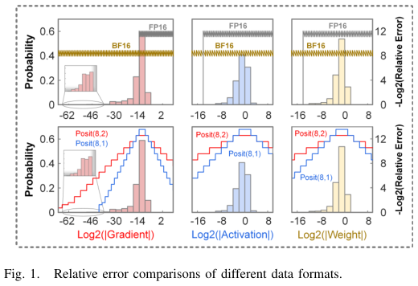
1.3 POSIT 数据格式：S / R / E / M
POSIT(n, es) 由四部分组成：S（1 位符号）+ R（regime，动态位宽）+ E（指数，es 位）+ M（尾数，动态位宽）：
值 = (−1)ˢ × (2^es)ᴿ × 2ᴱ × 1.M
- R 与 M 的位宽动态变化（m = n − r − es − 1）：R 长 → 指数范围大、尾数精度低；R 短 → 尾数精度高；
- R 是一元温度计码：正数“1…10”，十进制 = 连续 1 的个数 − 1（11110 → +3）；负数“0…01”，十进制 = 连续 0 的个数（00001 → −4）；
- 温度计码的连续 0/1 用前导 1/0 检测器自动分段 → 动态区分 regime 和尾数。
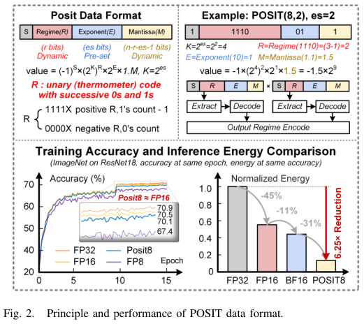
1.4 POSIT 的“账面”优势
- POSIT8 的精度损失 <0.4%（vs FP16/BF16，ResNet18 分类）；
- 能耗省 6.25×（8 位 vs 16 位存储/MAC）；
- 动态范围覆盖梯度（R 位自动变长）→ 训练不掉精度。
动态位宽在软件（算法）上很美好，落到硬件就有三个麻烦：regime 要动态解析（能耗↑）、尾数位宽不固定（单元浪费）、对齐后无重叠（加法浪费）。下一节详述这三大挑战——它们正是本论文创新的靶子。
§2POSIT 动态特性带来的三大挑战
理解三大挑战的量化来源：① regime 处理为什么贵 2.62×；② 为什么固定结构 CIM 会浪费 41.3% 单元；③ 为什么加法树会浪费 62.5% 能耗。这是理解三大创新的前提。
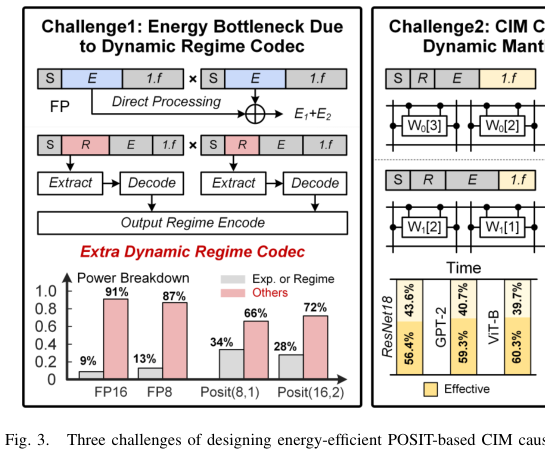
2.1 挑战一：regime 动态处理能耗 +2.62×
传统 FP 数据的指数是固定位宽，处理简单（直接取指数位）。POSIT 的 regime 是动态位宽温度计码，MAC 时需要：
- 提取：用前导 1/0 检测器找到温度计码边界；
- 译码：把温度计码转成十进制 RDA/RDB；
- 计算：RDA + RDB（两个 regime 相乘时指数相加）；
- 编码：把结果编码回温度计码格式。
这套 extract + codec 逻辑比 FP 的固定指数处理多耗 2.62× 能耗——是 POSIT-CIM 能效的第一个杀手。
2.2 挑战二：CIM 单元欠利用 41.3%
CIM 阵列通常按固定位宽尾数设计（如每单元 4b）才能 100% 利用。但 POSIT 尾数位宽动态变化：
- POSIT(8,1) 中 2/3/4 位尾数占多数（图 8 的统计）→ 按 4b 设计时，61.9% 的单元存不满（2b 尾数只占一半）；
- POSIT16 尾数范围 [0:12] → 按 12b 设计浪费达 85.7%；
- 直观解法“动态位宽 CIM 单元”不可行：N-bit 单元动态分区路由复杂度 O(N²)。
与其让空闲单元“闲着”，不如用它们存点有用的东西（预计算的关键位）→ 既保持固定结构，又把空闲变成算力。这就是 CPCS 的思路（§5）。
2.3 挑战三：加法树能耗浪费 62.5%
尾数乘积按 regime 动态对齐后相加。当两个对齐的乘积没有重叠位时：
- 所有全加器做 X+0=X 的运算 → 内部逻辑翻转完全冗余；
- X+0 的结果等于 X|0（逐位 OR）→ 加法可以被 OR 替代；
- 数据：TSMC 28nm 400MHz 下 16-bit 加法器 174.38 nW vs 16-bit OR 29.75 nW → OR 省 82.9%；
- POSIT8 尾数短（61.9% 的数据尾数 <3 位）→ 28.4% 的对齐结果完全无重叠位 → 加法树浪费 62.5%。
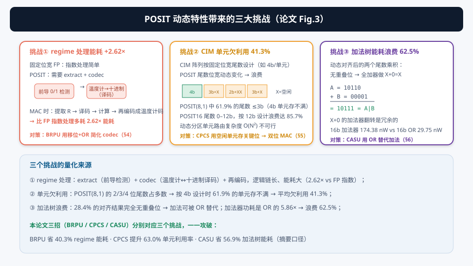
| 挑战 | 量化 | 对策（下一节起） |
|---|---|---|
| regime 处理 | 能耗 +2.62× | BRPU：shift-OR 简化（§4） |
| 单元欠利用 | 41.3%（POSIT8）/85.7%（POSIT16） | CPCS：空闲单元存关键位 → 双位 MAC（§5） |
| 加法树浪费 | 62.5% | CASU：OR 替代加法（§6） |
§3PD-CIM 宏总体架构
理解 PD-CIM 的组成（BRPU、16 CIM 核、16 加法树+CASU、全局 SRAM、编解码器、控制器），以及“regime 存 SRAM、尾数存 CIM”的职责划分和数据流。
3.1 架构组成（论文 Fig.4）
| 模块 | 职责 |
|---|---|
| BRPU | regime 提取与处理（移位-OR，§4）；regime 存全局 SRAM 做数字处理 |
| 16 个 CIM 核 | 每核 16 个 CPCS CIM 阵列；每阵列 8×48 子阵列（4b CIM 单元）；存动态位宽尾数做 MAC |
| 16 个加法树 + CASU | 动态对齐 + OR/加法混合累加（§6） |
| 28 kB 全局 SRAM | 存 regime / 激活 / 中间结果 |
| FP→POSIT 编码器 / POSIT→FP 解码器 | 与现有 AI 处理器兼容（FP 进出、POSIT 内部算） |
| 顶层控制器 | 调度、模式选择 |
职责划分沿袭 FP-CIM 的思路：regime（指数部分）走数字通路（SRAM + 数字逻辑），尾数（有效位）走 CIM 阵列——因为尾数乘法才是计算密集的部分，适合存内计算。
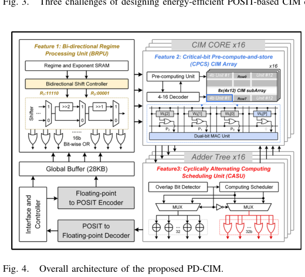
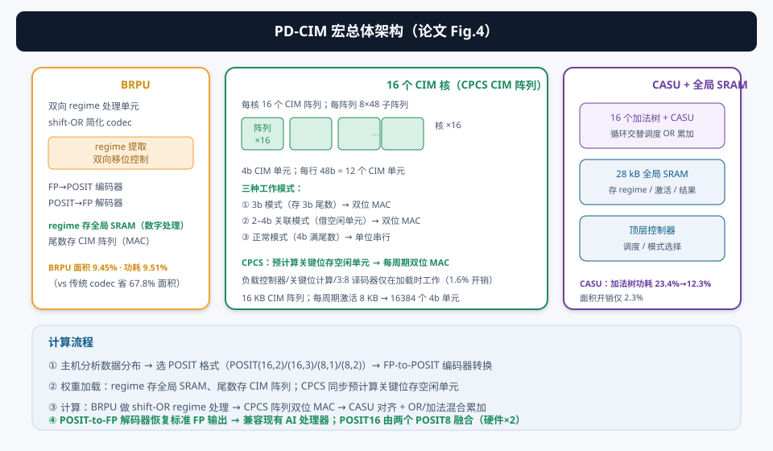
3.2 CIM 阵列的三个工作模式
CPCS CIM 阵列按存储的尾数位宽有三种模式（§5 详述）：
- 3b 模式：存 3 位尾数 → 有空闲单元存关键位 → 双位 MAC；
- 2–4b 关联模式：4 位尾数 LSB=0 时视为 3 位 → 借 2 位尾数单元的空闲位 → 双位 MAC；
- 正常模式：4 位满尾数 → 标准单位串行计算。
3.3 数据流
- 主机分析操作数分布 → 选 POSIT 格式（POSIT(16,2)/(16,3)/(8,1)/(8,2)）；
- FP-to-POSIT 编码器把 FP 数据转成所选 POSIT 格式；
- 权重加载：regime 存全局 SRAM，尾数存 CIM 阵列；CPCS 同步预计算关键位存空闲单元（只在此阶段工作，开销 1.6%）；
- 计算：BRPU 做 shift-OR regime 处理 → CPCS 阵列双位 MAC → CASU 对齐 + OR/加法混合累加；
- POSIT-to-FP 解码器恢复标准 FP 输出。
PD-CIM 的硬件基础是 POSIT8。POSIT16 通过融合多个 regime 处理单元、CIM 单元和加法单元实现，每个 POSIT16 计算的硬件逻辑约等于 2 个 POSIT8。四种格式（POSIT(16,2)/(16,3)/(8,1)/(8,2)）覆盖典型 AI 应用（ResNet152 推理、GPT-2 训练等）。
§4创新①：BRPU——用移位+OR 干掉 regime 的译码器
理解：① 为什么 regime 加法等价于“连续 0/1 个数”的加减；② shift-OR 怎么用一个译码器替代两个译码器+加法器+编码器；③ 双向移位控制器为什么必须“解码小 |R|、移位大 |R|”；④ 合并前导 0/1 检测器怎么再省一块。
4.1 核心观察：regime 的十进制值就是连续 0/1 的个数
POSIT 相乘 A×B 时，两个 regime 的十进制值要相加（RDA + RDB）。但 regime 本身是温度计码——十进制值 = 连续 0 或 1 的个数。所以“RDA + RDB”本质上就是“连续个数增加/减少”：
- 同号（都正或都负）：个数增加 → 相当于右移（温度计码变长）；
- 异号：个数减少 → 相当于左移（温度计码变短）。
基于这个性质，BRPU 的做法（论文 Fig.5）：只译码 RA 得到 RDA，把 RB 右移 RDA 位得到 RB′，再与 RA 逐位 OR——结果与传统的“译码×2 + 加法 + 编码”完全相同，但省掉一个译码器，加法/编码简化为移位+OR：
RA = “11110”（R=+3），RB = “1 10”（R=+1，4 位表示）。RDA=3 → RB 右移 3 位得 “00011” → OR：11110 | 00011 = “11111”（R=+4）✓。传统做法：3+1=4 再编码成 11111，殊途同归。
结果：regime 处理面积 −67.8%、功耗 −79.6%；整个宏面积 −23.6%、功耗 −22.2%。

4.2 双向移位控制器：为什么要“解码小 |R|、移位大 |R|”？
shift-OR 里要选一个译码、另一个移位。如果随机选会出两个问题（论文 Fig.6）：
- 同号情形（右移）：若解码了大 |R|、去移小 |R| → 移位码大 → 移位能耗随移位码线性增加（浪费）；
- 异号情形（左移）：若解码大 |R|、去移小 |R| → 左移移出界（例：RDA=4，RB=“001XX”左移 4 位 → “XXXXX”错误）。加额外移位位能修，但移位器成本翻倍。
解法：动态解码小的 |R|、移位大的 |R|——同号时小移位码省能量；异号时大 |R| 左移小 |R| 位不会出界（不加位宽、不犯错）。
怎么快速找到小 |R|？用 4-bit XOR + 前导 0/1 检测器：小 |R| 的连续 0/1 少 → 1→0 翻转出现得早 → 前导检测位置即小 |R| 值。温度计码本身不用转十进制，直接比较即可。
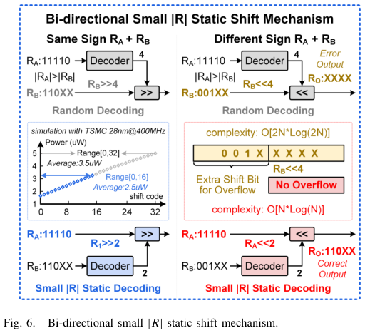
4.3 BRPU 架构与合并检测器（论文 Fig.7）
BRPU 由regime 提取单元、双向移位控制器、数字控制移位线、16-bit 输出 regime 寄存器堆组成。每个周期处理 2×4 位 RA/RB（POSIT(8,3) 的 regime 最大 4 位）。
另一个细节：区分正/负 regime 需要前导 1 检测器 + 前导 0 检测器 + 2:1 MUX。分离实现（TSMC 28nm 400MHz 4 位检测）占 4.93 µm²、耗 0.31 µW。本论文把两者的真值表合并成统一逻辑表达式，复用电路 → 面积 −28.4%、功耗 −25.8%。
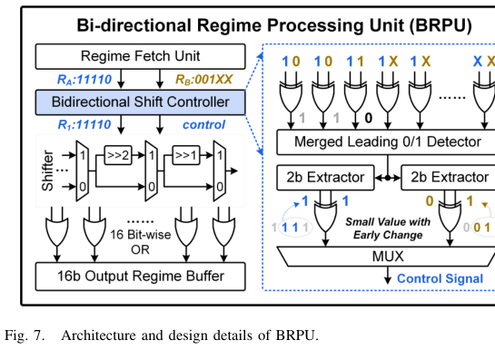
① regime 加法 = 连续个数增减 → shift-OR 替代 codec+加法+编码（省 1 译码器、面积 −67.8%、功耗 −79.6%）；② 双向移位控制：解码小 |R|、移位大 |R|（同号省能、异号免错）；③ 合并前导 0/1 检测器再省 28.4% 面积。BRPU 让三模型平均能效 +29.7%（再加双向调度 +39%）。
§5创新②：CPCS——把空闲单元变成“预计算的算力”
理解：① 双位 MAC（O = W×A[n] + W×A[n+2]）的数学原理；② “关键位 S[1]”是什么、为什么预计算存储它；③ 2–4b 关联和 3b 优先分区怎么处理 4b 与 POSIT16 长尾数。
5.1 双位 MAC 的数学基础（论文 Fig.8）
把 3 位尾数 W 存进 4 位 CIM 单元（有 1 个空闲位）。传统单位串行每周期算 W×A[n]。本论文让单元每周期接收 A[n]|A[n+2]，做双位 MAC：
O = W×A[n] + W×A[n+2]
具体：单元先算部分积 P[2:0] = W×(A[n]|A[n+2])，再按 A[n+2]/A[n] 组合移位相加：
- 00 或 01：O = P[2:0]；
- 10：O = P[2:0] ≪ 2；
- 11：O = P[2:0] + P[2:0]≪2 = S[3:0]‖P[1:0]。
其中 S[1] = W[P] = W[1]∧(W[0]&W[2]) 是晶体管消耗最大的位（“关键位”）。
与其运行时算 S[1]（最贵的位），不如在权重加载时预计算好，存进那 1 个空闲单元 → 运行时直接读出 → 每周期完成两个 MAC。这就是“critical-bit pre-compute-and-store”：把空闲位变成预计算的寄存器。
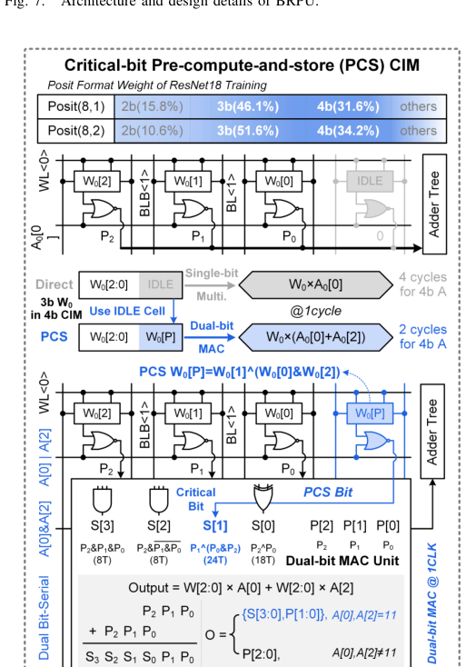
5.2 2–4b 关联：4 位尾数也能双位 MAC（论文 Fig.9）
4 位满尾数 Wn 没有空闲单元，无法存关键位。但若 Wn[0] = 0（LSB 为 0）：
- Wn[3:1] 可视为 3 位权重 → 双位 MAC：Wn[3:1]×A[n] + Wn[3:1]×A[n+2]；
- 而存 2 位尾数 Wm 的单元有 2 个空闲位 → 4 位单元借 2 位单元的一个空闲位存 Wn[P] → 双位 MAC 可行；
- 吞吐提升 31%。
5.3 3b 优先分区：POSIT16 长尾数的处理（论文 Fig.9）
POSIT16 尾数可超 4 位 → 需多个 4 位单元存一个尾数。朴素做法“顺序分区”（9 位 “100111011” → “1001”“1101”“1XXX”）会让“1001”段无法双位 MAC（X 空闲全堆最后）。本论文的 3b 优先分区：
- “100111011” → “100X”“111X”“011X” → 三段都是 3 位有效 + 1 位空闲 → 全部可双位 MAC；
- 无法切成 3 位段时（如 10 位），动态调整让切出的 4 位段 LSB=0 → 走 2–4b 关联；
- POSIT16 吞吐提升 1.34×。
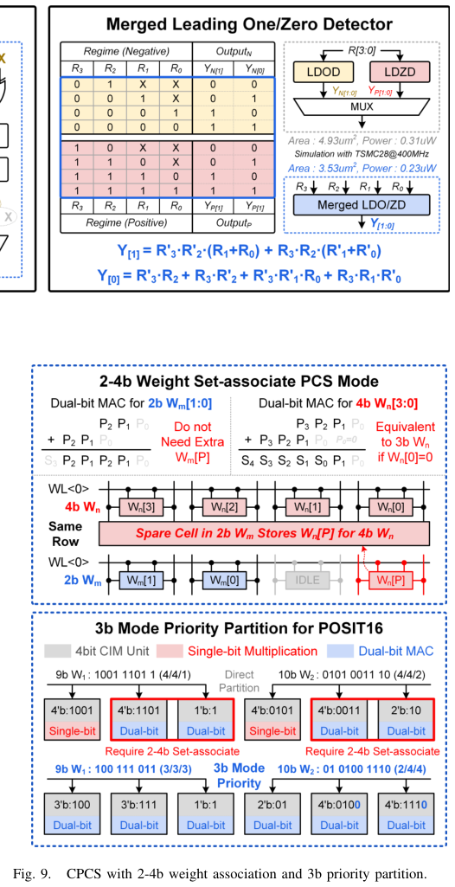
5.4 CPCS CIM 阵列架构（论文 Fig.10）
CPCS 阵列 = 8×48 CIM 阵列 + 负载控制器 + 关键位计算单元 + 3:8 译码器。每行 48b = 12 个 4b CIM 单元。三种工作模式：
- 存 3b 尾数 → 双位 MAC（关键位存本单元空闲位）；
- 存 4b 且 W[0]=0 → 2–4b 关联（借同行的 2b 单元空闲位，结果左移 1 位补偿）；
- 存 4b 且 W[0]=1 → 标准单位串行。
负载控制器/关键位计算/3:8 译码器只在权重加载或更新时工作 → 开销仅 1.6%（阵列 98.7% 周期在计算）。
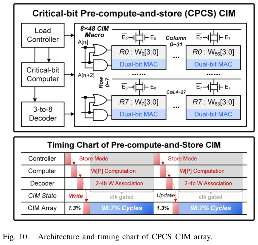
① 双位 MAC 数学：O = W×A[n] + W×A[n+2]，关键位 S[1] 最贵 → 预计算存储；② 2–4b 关联：借位实现 4b 双位（+31%）；③ 3b 优先分区：POSIT16 全段双位（+1.34×）；④ 预计算开销仅 1.6%。整体：单元利用率 +63%、吞吐 +38.2%、系统能效 +1.46×（最高 1.96×）。
§6创新③：CASU——用 OR 替代加法，还不够就“调度出”无重叠
理解：① 为什么无重叠位的加法等于 OR；② 提前检测怎么扩大 OR 的适用范围（重叠位 ≤4 且不全为 1）；③ 循环交替调度怎么“制造”无重叠（(n−1) 个 OR + 1 个加法）。
6.1 OR 替代：无重叠位时 X+0 = X|0（论文 Fig.11）
尾数乘积按 regime 对齐后相加。当两个对齐结果没有重叠位时，每个全加器都在做 X+0=X——结果是冗余的，逐位 OR 就能得到相同输出：
- 16-bit 加法器 174.38 nW vs 16-bit OR 29.75 nW（TSMC 28nm, 400MHz）→ OR 省 82.9%；
- POSIT8 尾数短 → 28.4% 的对齐结果无重叠位（FP8 因尾数长几乎总是重叠）。
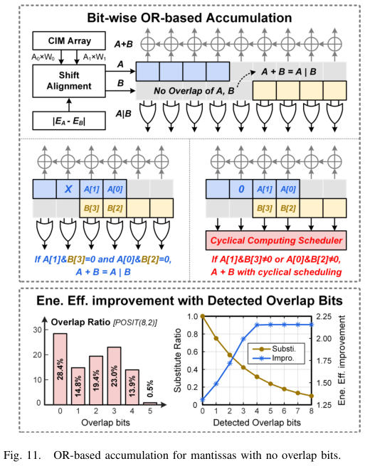
6.2 提前检测：有重叠位也能用 OR
两个操作数 A、B 有重叠位时，如果重叠位不同时为 1，A[1]+B[3] 仍然等于 A[1]|B[3]：
- 单个重叠位满足“替代条件”的概率 = 3/4（只有 11 不行）；
- n 个重叠位全部满足 = (3/4)ⁿ → n=4 时只有 23.7%，且检测开销随位数线性增长 → 检测 4 位最优；
- 结果：对有重叠位的操作数也减少了 36.1% 的加法器。
6.3 循环交替调度：把重叠“错开”（论文 Fig.12）
如果重叠位全为 1（无法用 OR），CASU 用循环交替调度：
- M0=W0×A0 与 M1=W1×A1 有 1 个重叠位 → 同步位串行时每一位都重叠 → 都要加法器；
- 把 A0 的位串行计算循环移位 1 位（A0[0:n] → A0[1:n], A0[0]）→ CIM 算 A0[i+1] 与 A1[i] → 当 i<n 时 W0×A0[i+1] 与 W1×A1[i] 无重叠；
- 重叠只在 W0×A0[0] + W1×A1[n]（1 个加法器）；
- n 次加法 → (n−1) 个 OR + 1 个加法器。
效果：无重叠率 +36.4%、计算功率 −31.3%。
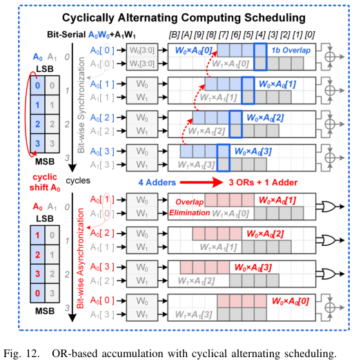
6.4 CASU 架构与控制流（论文 Fig.13）
CASU = 两个对齐单元 + 工作模式控制器 + 循环计算调度器：
- 对齐单元接收 BRPU 输出的 R0D、R1D，计算 |R0D−R1D|；
- 假设 R0D > R1D → 把 W1×A1 右移 |R0D−R1D| 位对齐到 W0×A0；
- 重叠位数 = n − |R0D−R1D|（n 为乘积位宽）；
- 控制器决策：
- 重叠 ≤ 0 → 纯 OR 模式；
- 0 < 重叠 < 4 → 检查替代条件（重叠位是否全非 1）：满足 → OR 模式；不满足 → 循环调度加法模式；
- 重叠 > 4 → 循环调度加法模式（(n−1) OR + 1 加法）。
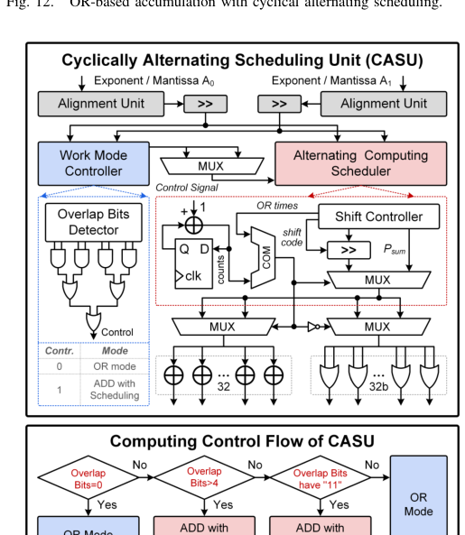
① 无重叠 → OR（省 82.9%）；② 提前检测 4 位（重叠位非全 1 也可 OR，省 36.1% 加法器）；③ 循环交替调度（错开位串行顺序，制造无重叠，(n−1) OR + 1 加法）。加法树功耗占比 23.4%→12.3%，面积开销仅 2.3%。
§7精度表现与三招的适配性
理解：① POSIT16/POSIT8 在不同模型上的精度表现；② 为什么 ViT-B 精度损失略高（softmax 敏感）；③ CPCS/CASU 能否用于标准 FP 和传统 POSIT 处理器。
7.1 精度结果（论文表 I）
| 场景 | 精度 vs FP32 | 说明 |
|---|---|---|
| ResNet18 训练（POSIT16） | 仅掉 0.04% | 训练也能用 POSIT16 保持精度 |
| ViT-B 推理（POSIT8） | 掉 0.14% | 注意力的 softmax 对精度敏感 |
| ViT-B 推理（POSIT8 vs FP16） | 几乎一致 | 比 FP8 高 4.76% |
要点：POSIT8 的精度几乎与 FP16 相同、显著超过 FP8——因为 POSIT 动态分配位宽，能适配注意力计算的特定数据分布。三模型整体：PD-CIM 省能 7.94×。
7.2 为什么 GPT-2 / ViT-B 推理能效 > ResNet18 训练？
- 训练用 POSIT16 → 存储访问能耗 2×（8 位 vs 16 位）；
- POSIT16 吞吐只有 POSIT8 的一半 → 能效打折。
7.3 适配性：三招不止用于 POSIT-CIM（论文 §VIII）
CPCS 和 CASU 可直接用于 FP16：把 FP16 视为固定 10 位尾数的 POSIT16 → 3b 优先分区切 10 位尾数为三段 → 预计算存储实现双位 MAC；对齐后重叠位 <4 时用 OR 替代加法。
BRPU 与 CASU 可用于所有 POSIT 处理器（regime 处理是所有 POSIT 处理器的大开销）。在 CIM 中收益更明显：因为 CIM 把 MAC 面积功耗压下去后，regime/加法树的比例更突出。CASU 的循环调度依赖 CIM 的位串行计算（经典处理器偏爱并行乘法，收益较小）。
7.4 单宏 vs 多宏系统
16 个 PD-CIM 经总线连 LPDDR3-800（6.4 GB/s），按张量并行分派任务 → 近线性扩展到 15.3×（单宏）。这验证了 PD-CIM 作为“可扩展计算引擎”的系统集成能力。
§8芯片实测与 SOTA 对比
理解：① 芯片规格（工艺/电压/频率/性能）；② 功耗面积分解的三处改善；③ 与 SOTA FP-CIM 的能效/速度对比。
8.1 芯片规格（论文 Fig.14）
| 指标 | 数值 |
|---|---|
| 工艺 / 面积 | 28nm CMOS / 1.41 mm² |
| 电压 / 功耗 | 0.55–1.0 V / 5.5–237 mW |
| 最高频率 / 峰值性能 | 419 MHz / 3.86 TOPS（POSIT8）· 1.91 TOPS（POSIT16） |
| CIM 阵列 | 16 KB；每周期激活 8 KB → 16384 个 4b 单元 |
| 平均尾数位宽 | POSIT8 3.55 位 → 平均 3.55 周期/计算 |
| 峰值能效 | 83.23 TFLOPS/W @ POSIT(8,1)（0.65V / 260 MHz） |
算力来源：16384 单元 × 419 MHz × 2 ÷ 3.55 = 3.86 TOPS（每周期 1 乘 1 加计 2 OPs）。
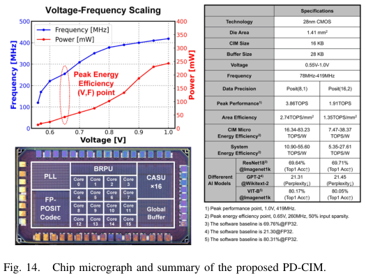
8.2 功耗与面积分解（论文 Fig.15）
| 模块 | 优化前/后功耗占比 | 面积占比 |
|---|---|---|
| CIM 阵列 | 56.3% → 41.2% | — |
| 加法树 | 23.4% → 12.3% | +2.3% |
| BRPU（shift-OR） | 9.51% | 9.45%（比传统 codec 小 67.8%） |
三个模块的功耗占比都被压下去了，而面积开销（CASU 2.3%）几乎可忽略——三招都是“小面积换大能效”。
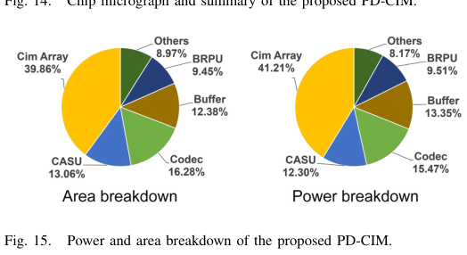
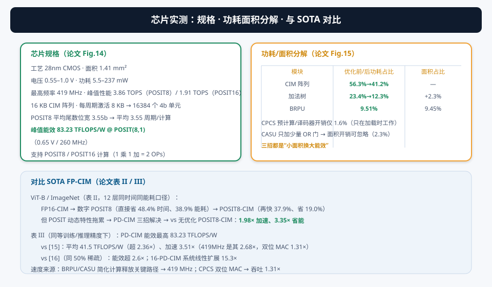
8.3 三招的独立贡献（论文 Fig.17/18）
| 技术 | 贡献（ResNet18 训练，POSIT16） |
|---|---|
| BRPU | 能效 3.48→6.75 TFLOPS/W（1.94×）；三模型平均 +29.7%，双向调度再 +39% |
| CPCS | 系统能效平均 +1.46×（最高 1.96×）；吞吐 +38.2%（+24.7% 关联、+1.34× 分区） |
| CASU | 系统能效 → 27.61 TFLOPS/W（2.08×）；OR 替代省 82.9%、循环调度再省 31.3% |
叠加后：CIM 核峰值 83.23 TFLOPS/W（POSIT8）。
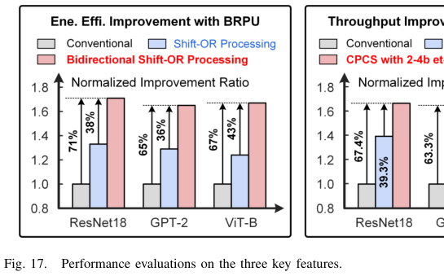
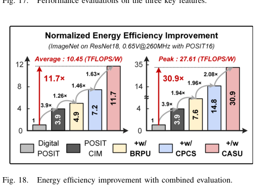
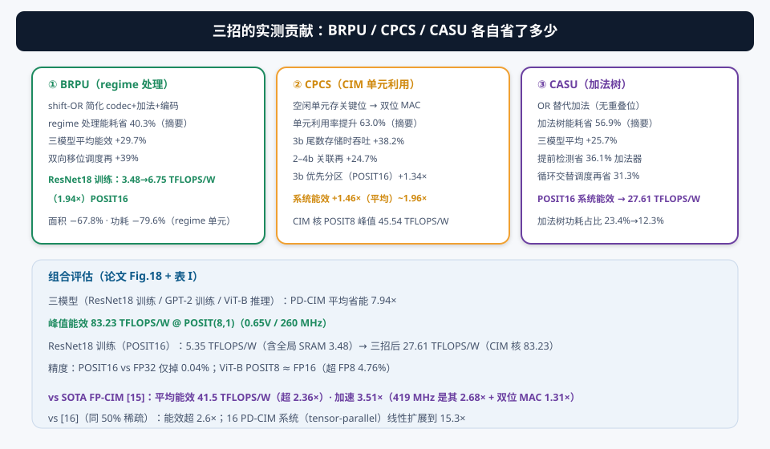
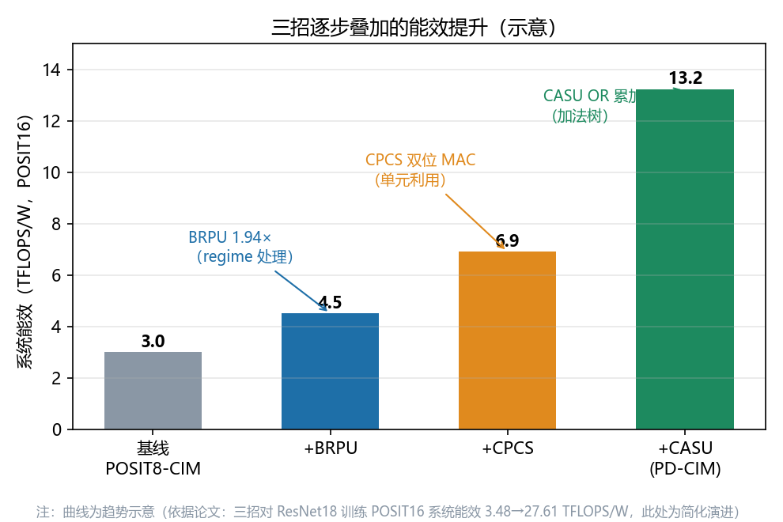
8.4 与 SOTA 对比（论文表 II/III）
表 II（ViT-B / ImageNet，12 层同口径）：
| 方案 | 相对时间 | 相对能耗 |
|---|---|---|
| FP16-CIM（基线） | 100% | 100% |
| 数字 POSIT8（无 CIM） | −48.4% | −38.9% |
| POSIT8-CIM（无优化） | 再 −37.9% | 再 −19.0% |
| PD-CIM（本论文） | vs 无优化 POSIT8-CIM：1.98× 加速、3.35× 省能 | |
精确口径：PD-CIM vs 无优化 POSIT8-CIM：1.98× 加速、3.35× 省能；vs FP16-CIM 总节省更可观。
表 III（SOTA FP-CIM 处理器）：
- 同等精度下 PD-CIM 能效最高 83.23 TFLOPS/W；
- vs [15]：平均能效 41.5 TFLOPS/W（超 2.36×）、加速 3.51×（419 MHz 是其 2.68× + 双位 MAC 1.31×）；
- vs [16]（同 50% 稀疏）：超 2.6×；vs [17]：超 2.46×；
- 16-PD-CIM 系统线性扩展 15.3×。
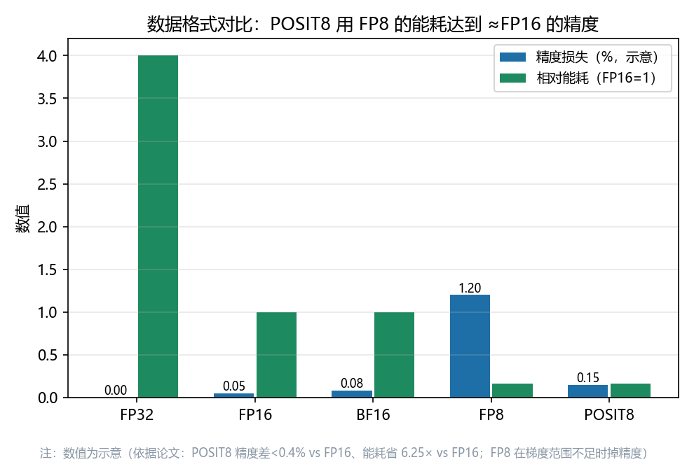
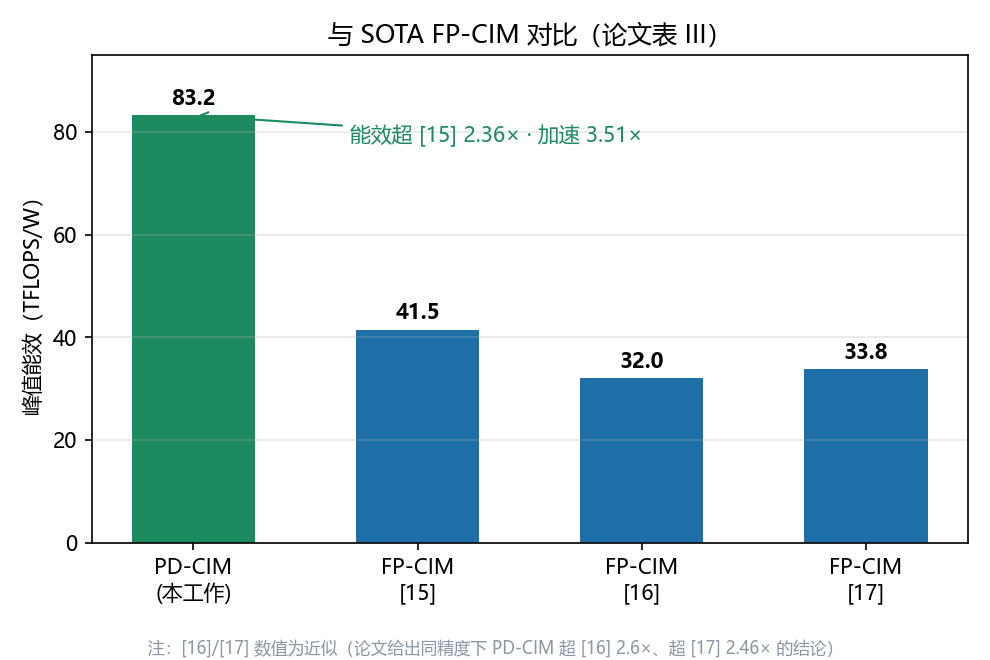
§9总结 · 未来研究方向 · 术语表 · 参考资料
9.0 全文总结：数据格式与硬件的协同设计
把整篇论文串成一句话：FP-CIM 精度高但格式贵 → 换成动态位宽的 POSIT（POSIT8≈FP16）→ 再用三招（BRPU/CPCS/CASU）治住动态特性的三大副作用。逻辑链：
- 动机：FP32/16/BF16 存储与 MAC 功耗大；FP8 覆盖不了梯度（69.3% 变 0）（§1）；
- 数据格式：POSIT 动态位分配（S/R/E/M），R 是温度计码，POSIT8 ≈ FP16 精度、省 6.25× 能耗（§1）；
- 三大挑战：regime 处理 +2.62× · 单元欠利用 41.3% · 加法树浪费 62.5%（§2）；
- 三招对策：BRPU（shift-OR，省 40.3% regime 能耗）（§4）· CPCS（空闲单元存关键位，利用率 +63%）（§5）· CASU（OR 替代加法 + 循环调度，省 56.9% 加法树）（§6）；
- 闭环验证：83.23 TFLOPS/W @ POSIT(8,1) · ViT-B 省能 2.36×、加速 3.51× · 精度损失 <0.2%（§8）。
- 强：① 数据格式视角独特——“换一种数”比“把电路做快”更根本；② 三个创新的“问题-对策”对应极其工整（动态特性 → 针对性电路）；③ 每个技巧都抓住 POSIT 的数学特性（温度计码个数、动态位宽空闲、短尾数低重叠）；④ 83.23 TFLOPS/W + ViT-B 验证，数据扎实；⑤ 适配性讨论（FP16/经典 POSIT 处理器）扩大了工作价值。
- 弱/局限：① POSIT 生态不成熟（无标准工具链、模型都是 FP 训练后转换）；② 83.23 TFLOPS/W 是宏级峰值，系统级（含 SRAM/总线）会打折；③ 仅验证 8/16 位，POSIT32 未涉及；④ 与 MXFP（第 6 篇）这类共享指数格式相比，regime 的额外逻辑仍是开销；⑤ 多宏系统只做了仿真（15.3×），未流片验证。
9.1未来研究方向
- POSIT 生态建设：训练时直接用 POSIT（而非 FP 训练后转换）能进一步释放精度潜力；配套编译器/量化工具链是落地关键；
- 更高位宽与混合格式：POSIT32 / 混合精度（不同层用不同 POSIT 配置，甚至 POSIT+MXFP 混用，按层自适应）；
- 在线训练增强：梯度范围大是 POSIT 的强项，可探索“训练全程 POSIT16/8”免 FP 回退；
- 与 MXFP / 其他动态格式对比融合：MXFP（第 6 篇）用共享指数 + 固定尾数，POSIT 用动态 regime——两者在不同分布下的优劣值得系统对比，甚至设计混合格式；
- 多宏系统流片：16-PD-CIM 张量并行已仿真 15.3×，可做完整 SoC（主机 + 互联 + 存储层次）流片验证；
- 算法-硬件联合搜索：用 NAS/自动化搜索找“每层最优 POSIT 配置 + 硬件模式组合”，最大化精度-能效帕累托前沿。
9.2术语表
| 术语 | 解释 |
|---|---|
| POSIT(n, es) | n 位、es 位指数的 POSIT 数据格式；值 = (−1)ˢ(2^es)ᴿ2ᴱ(1.M)。 |
| Regime（R） | POSIT 的动态位宽指数部分，温度计码（连续 0/1）。 |
| 温度计码（Thermometer Code） | 用连续 1（或 0）的个数表示数值，如 11110、00001。 |
| es（exponent size） | POSIT 指数域的固定位宽；es 大 → 指数范围宽、尾数少。 |
| BRPU | 双向 regime 处理单元：shift-OR 替代 codec+加法+编码。 |
| CPCS | 关键位预计算并存储：空闲 CIM 单元存预计算关键位 → 双位 MAC。 |
| 关键位 S[1] | 双位 MAC 中晶体管消耗最大的位，预计算存储省运行时开销。 |
| 双位 MAC | 每周期完成 W×A[n] + W×A[n+2] 两个 MAC。 |
| 2–4b 关联 | 4 位尾数（LSB=0）借 2 位尾数单元的空闲位实现双位 MAC。 |
| 3b 优先分区 | POSIT16 长尾数切 3 位段（留 1 空闲位）→ 全段可双位 MAC。 |
| CASU | 循环交替调度单元：无重叠位用 OR 替代加法。 |
| 无重叠位（No Overlap） | 对齐后两个数的占位不重叠 → X+0=X，加法等价于 OR。 |
| 提前检测 | 检查重叠位是否全为 1；非全 1 时仍可用 OR（单重叠位概率 3/4）。 |
| 循环交替调度 | 循环移位位串行计算顺序，制造无重叠（(n−1) OR + 1 加法）。 |
| TFLOPS/W | 每瓦每秒万亿次浮点运算；本论文每周期 1 乘 1 加计 2 OPs。 |
| ViT-B | Vision Transformer Base：视觉 Transformer 基准模型。 |
9.3参考资料
- 本论文：Y. Wang et al., “An Energy-Efficient POSIT Compute-in-Memory Macro for High-Accuracy AI Applications,” IEEE JSSC, vol. 60, no. 8, pp. 2981–2993, Aug. 2025. DOI: 10.1109/JSSC.2025.3532654
- [15] SOTA FP-CIM 宏（ViT-B ImageNet 对比基线，本文能效超 2.36×、加速 3.51×）。
- [16] / [17] 其他 FP-CIM 对比对象（能效超 2.6× / 2.46×）。
- [27]–[33] POSIT 数据格式原始文献（J. Gustafson 的 POSIT 提案及后续工作）。
- [22] 本团队前期 POSIT-CIM 会议论文（ISSCC/CICC 短文）。
想深入的学生：① 先读 POSIT 原始论文（Gustafson, "Beating Floating Point at its Own Game"）理解格式数学；② 与本系列第 6 篇（MXFP-CIM）对比两种“省位宽”路线：MXFP 共享指数（静态）vs POSIT 动态 regime；③ 动手：写个小 Python 脚本把 FP16 转 POSIT8（实现温度计码编码/解码），统计真实模型数据的 regime/尾数位宽分布，验证 61.9%/28.4% 这些数字；④ 用 Verilog 实现一个 4 位 CIM 单元的双位 MAC 和关键位预计算，对比单位串行的晶体管数。